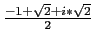
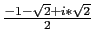
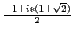

Avec de quatre à six arguments, cercle désigne un arc de
cercle. Dans ce cas les deux premiers arguments déterminent le cercle qui
porte l'arc (voir ci-dessus) et les deux arguments suivants sont les angles
au centre des points qui délimitent l'arc et les deux derniers arguments
sont des noms de variables qui contiendront les points qui délimitent
l'arc. Le troisième et le quatrième argument sont les mesures des
angles au centre des points qui délimitent l'arc, ces angles sont mesurés
en radians (ou en degrés) à partir de l'axe défini par les deux
premiers arguments si le deuxième argument est un point (définition du
cercle par son diamètre) ou de l'axe défini par son centre C et le
point A = C + r si le deuxième argument est un complexe égal à r
(définition du cercle par son centre et un complexe dont le module est
égal au rayon).
Le cinquième et le sixième argument ne sont pas obligatoires et
servent à définir les extrémités de l'arc.
On tape :
cercle(-1,1,0,pi/4,A,B)
On obtient si on a coché radian dans la configuration du cas
(bouton donnant la ligne d'état) :
L'arc AB (A=point(0) et B=point(
)) du cercle de centre -1 et de rayon 1 est tracé
En effet l'angle est compté à partir de l'axe (-1,0) et donc l'angle 0
est le point(0).
On tape :
cercle(-1,i,0,pi/4,A,B)
On obtient si on a coché radian dans la configuration du cas
(bouton donnant la ligne d'état) :
L'arc AB (A=point(-1+i) et B=point(
)) du cercle de centre -1 et de rayon 1 est tracé
En effet, l'angle est compté à partir de l'axe (-1,i-1) et donc l'angle 0
est le point d'affixe i-1.
On tape :
cercle(-1, point(i),0,pi/4,A,B)
On obtient :
L'arc AB (A=point(i) et B=point(
)) du cercle de diamétre -1,i
En effet, l'angle est compté à partir de l'axe (-1,i) et donc l'angle 0 est
le point d'affixe i.